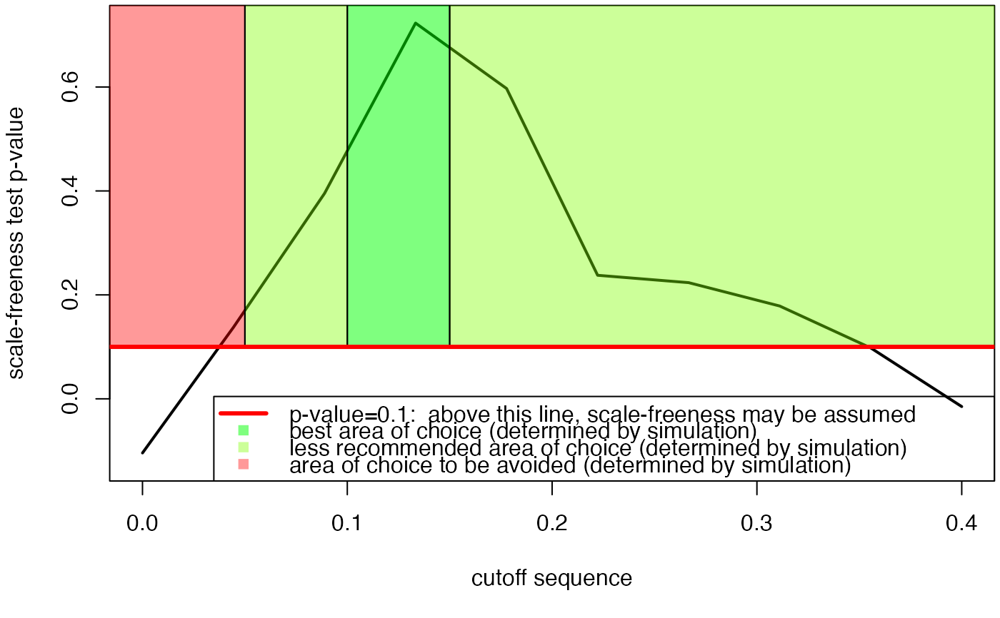

Allows estimating the best cutoff. For a sequence of cutoff, the p value corresponding to each cutoff value of the sequence. Mainly recommended for single time cascade networks. To achieve more sparsity in other settings, please use a fiiting function based on the stability selection or selectboost algorithms.
# S4 method for omics_network
cutoff(Omega, sequence = NULL, x_min = 0)a omics_network object
a vector corresponding to the sequence of cutoffs that will be tested.
an integer ; only values over x_min are further retained for performing the test.
A list containing two objects :
the p values corresponding to the sequence of cutoff
the smoothed p value vector, using the loess function
# \donttest{
data(network)
cutoff(network)
#> [1] "This computation may be long"
#> [1] "1/10"
#> [1] "2/10"
#> [1] "3/10"
#> [1] "4/10"
#> [1] "5/10"
#> [1] "6/10"
#> [1] "7/10"
#> [1] "8/10"
#> [1] "9/10"
#> [1] "10/10"
#> [1] 0.000 0.000 0.092 0.967 0.575 0.044 0.379 0.196 0.049 0.014

#> $p.value
#> [1] 0.000 0.000 0.092 0.967 0.575 0.044 0.379 0.196 0.049 0.014
#>
#> $p.value.inter
#> [1] -0.105211535 0.142647206 0.399896393 0.721200622 0.584513318
#> [6] 0.228774926 0.229107239 0.185474363 0.105482049 -0.009405422
#>
#> $sequence
#> [1] 0.00000000 0.04444444 0.08888889 0.13333333 0.17777778 0.22222222
#> [7] 0.26666667 0.31111111 0.35555556 0.40000000
#>
#See vignette for more details
# }